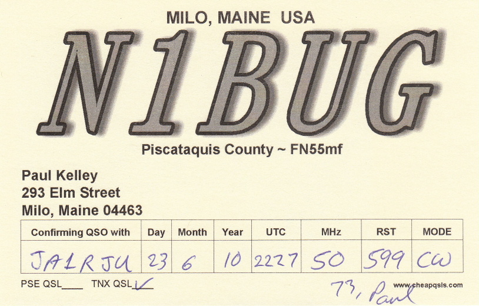

Flash ! DX


 
|
|
|
|

|
|
|
[Back Issues Nov.2010]
TIME:UTC(JST-09:00)
Report from JA1RJU(PM95sq)
30.Nov.2010(15:00c)
Report from JA1RJU(PM95sq)
29.Nov.2010(15:00c)
Report from JA1RJU(PM95sq)
28.Nov.2010(15:00c)
Report from JA1RJU(PM95sq)
27.Nov.2010(15:00c)
Report from JA1RJU(PM95sq)
26.Nov.2010(15:00c)
VK-TV 04:40- 46.172 -- VK video
Report from JA1RJU(PM95sq)
25.Nov.2010(15:00c)
Report from JA1RJU(PM95sq)
24.Nov.2010(15:00c)
DU1GM 07:06 50.105 CW @ FB !
DU1EV/B 07:10- 50.008 CW Beacon
Report from JA1RJU(PM95sq)
23.Nov.2010(15:00c)
VK-TV 03:35- 46.172 -- VK video
Report from JA1RJU(PM95sq)
22.Nov.2010(15:00c)
Report from JA1RJU(PM95sq)
21.Nov.2010(15:00c)
VK-TV 03:40- 46.172 -- VK video
VK-TV 06:00- 46.172 -- VK video strong !
(FK1TK 06:25 50.110 SSB JA3)
Report from JA1RJU(PM95sq)
20.Nov.2010(15:00c)
VK-TV 03:35- 46.172 -- VK video
Report from JA1RJU(PM95sq)
19.Nov.2010(15:00c)
Report from JA1RJU(PM95sq)
18.Nov.2010(15:00c)
Report from JA1RJU(PM95sq)
17.Nov.2010(15:00c)
VK-TV 04:00- 46.172 -- VK video weak
Report from JA1RJU(PM95sq)
16.Nov.2010(15:00c)
VK-TV 05:00- 46.172 -- VK video strong!
VK4MA 05:16 50.130 SSB
VK4WM 05:16 50.139 SSB
VK4BG 05:17 50.160 SSB
Report from JA1RJU(PM95sq)
15.Nov.2010(15:00c)


Report from JA1RJU(PM95sq)
14.Nov.2010(15:00c)
VK-TV 04:25- 46.172 -- VK video strong!
VK-TV 04:25- 46.240 -- VK video weak
VK4ZJB 04:43 50.110 CW CQ weak
Report from JA1RJU(PM95sq)
13.Nov.2010(15:00c)
VK-TV 03:57- 46.172 -- VK video
VK6JQ 08:57 50.110 CW
Report from JA1RJU(PM95sq)
12.Nov.2010(15:00c)
Report from JA1RJU(PM95sq)
11.Nov.2010(15:00c)
DU7/PA0HIP 07:05 50.105 CW CQ
DU1EV/B 07:17- 50.008 CW Beacon
DU7/PA0HIP 07:24 50.105 CW @
Report from JA1RJU(PM95sq)
10.Nov.2010(15:00c)
VK-TV 05:30- 46.172 -- VK video
DU7/PA0HIP 05:48 50.110 CW CQ
VK4BLK 06:09 50.110 CW CQ
VK4FNQ 06:10 50.110/160 SSB CQ
VK4BLK 06:12 50.110 CW @
DU7/PA0HIP 06:18 50.105 CW CQ
VK4EK 06:26 50.110 CW CQ
VK4BKP 06:30 50.110 SSB CQ
Report from JA1RJU(PM95sq)
05-09.Nov.2010(15:00c)
◎11/5～11/9のリポートの更新は休止します。
(38th SEANET CONVETION 2010= Shanghai, China)
Report from JA1RJU(PM95sq)
04.Nov.2010(15:00c)
VK-TV 07:05- 46.172/240 -- VK video weak
Report from JA1RJU(PM95sq)
03.Nov.2010(15:00c)
VK-TV 03:55- 46.172 -- VK video
Report from JA1RJU(PM95sq)
02.Nov.2010(15:00c)
VK-TV 03:30- 46.172 -- VK video
VK-TV 05:05- 46.240 -- VK video weak
Report from JA1RJU(PM95sq)
01.Nov.2010(15:00c)
VK-TV 06:10- 46.172 -- VK video strong!